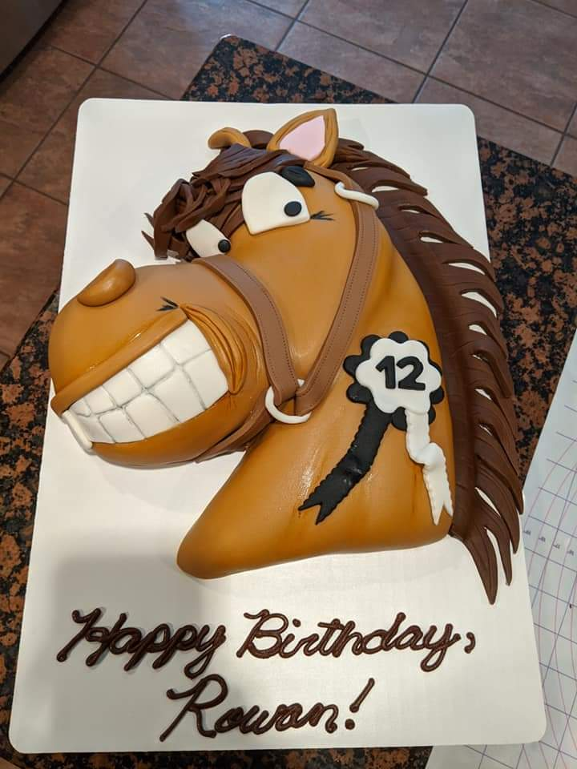
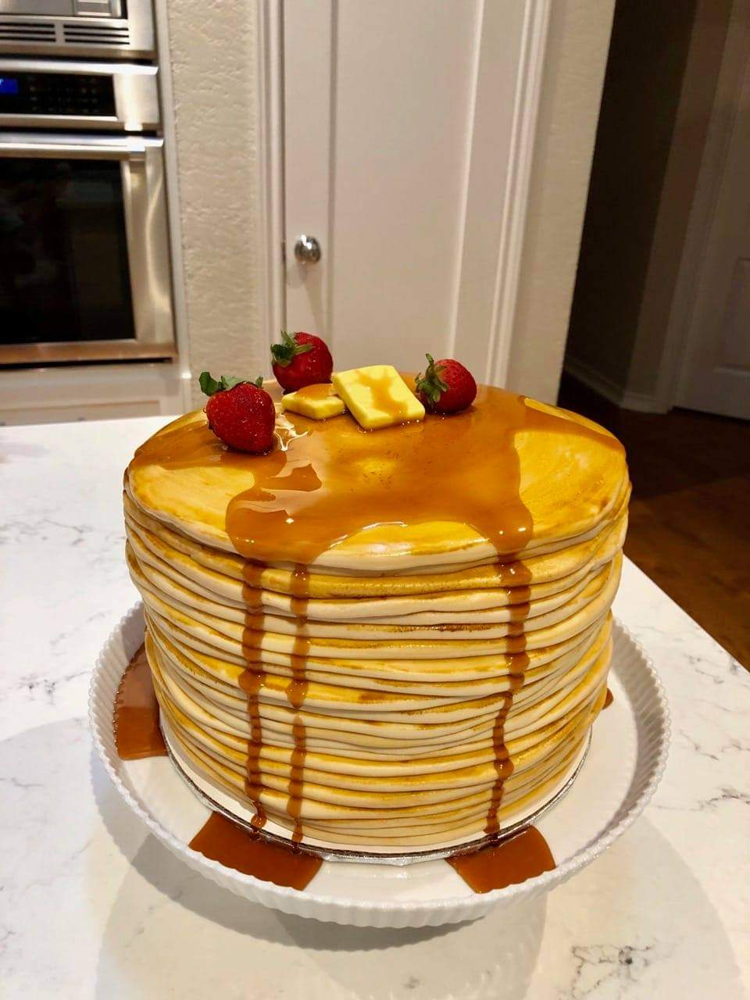
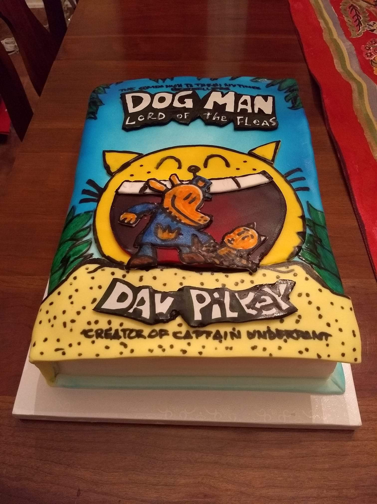
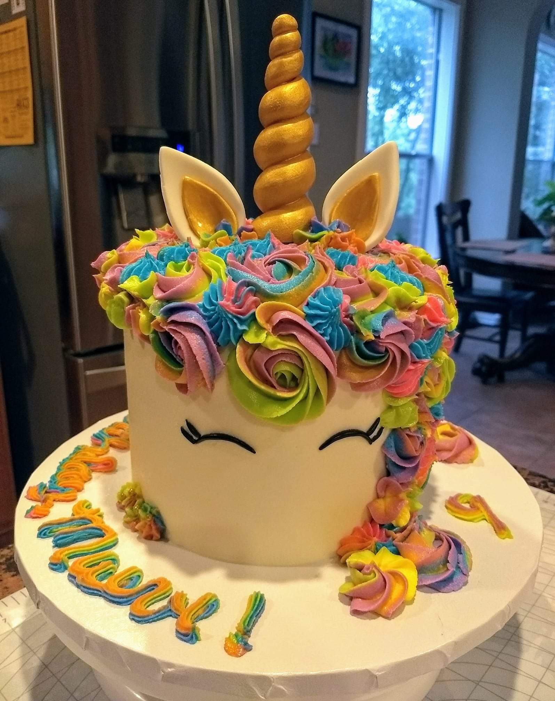
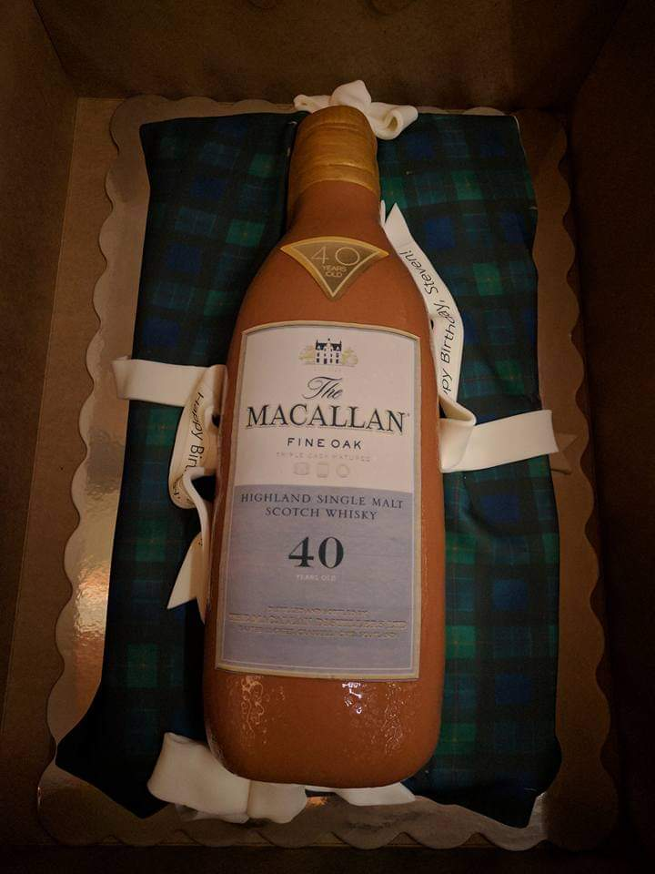

| Home | Cake Camp | Gallery | About |
|---|
Visit Our Facebook Page To See More Pictures
|  |  | ||
|---|---|---|---|
|  |  |  |
Follow Us |
Contact Us: |
Operating Under The Texas Cottage Food Law |
|---|---|---|
| sarah@austindreamcakes.com or 512-910-5376 | All products are made in a home that is not inspected by the Department of State Health Services or local health department. Please be advised that foods prepared here may come in contact with any or all major food allergens, such as eggs, nuts, soy, peanuts, milk and wheat. Fondant and icing contains artificial food dyes. |